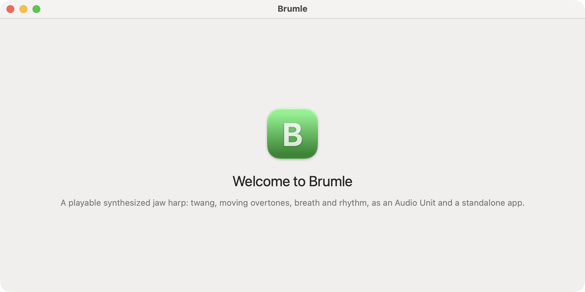

Getting started
- Download the disk image from the download page and open it.
- Drag Brumle to Applications and start it from there.
The main window

Brumle is a playable synthesized jaw harp: the twang of the reed, overtones that move as the mouth changes shape, breath and rhythm, as an Audio Unit and a standalone app. For now the window shows only the app's name; the instrument's controls arrive with the next versions, and this manual describes each of them as it does.
Updates
At every launch Brumle asks whether a newer version exists and, if so, offers it; nothing is installed without your OK. Brumle › Check for Updates… asks right away.